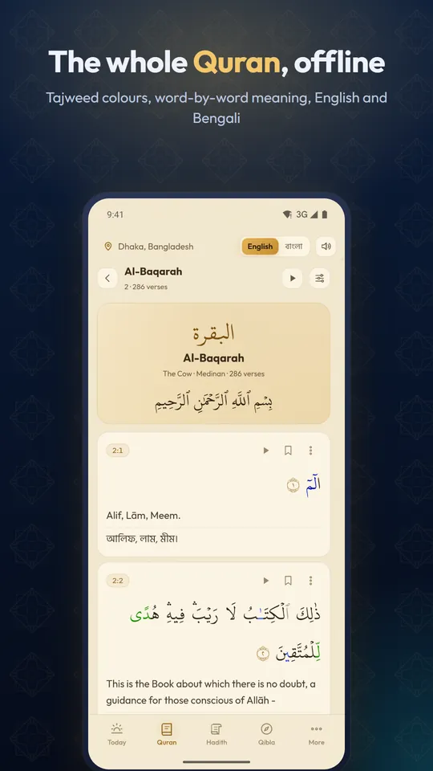
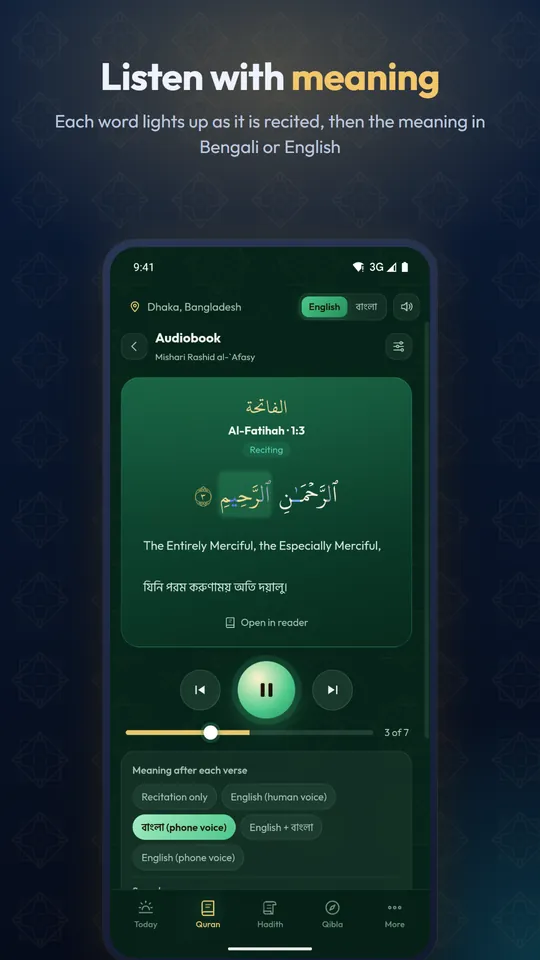
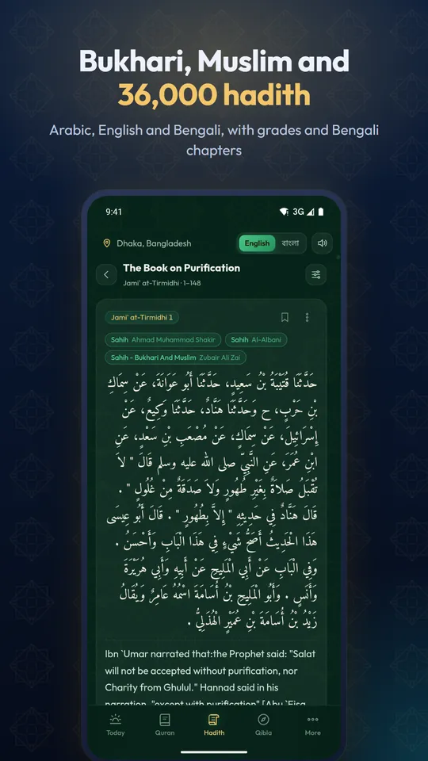
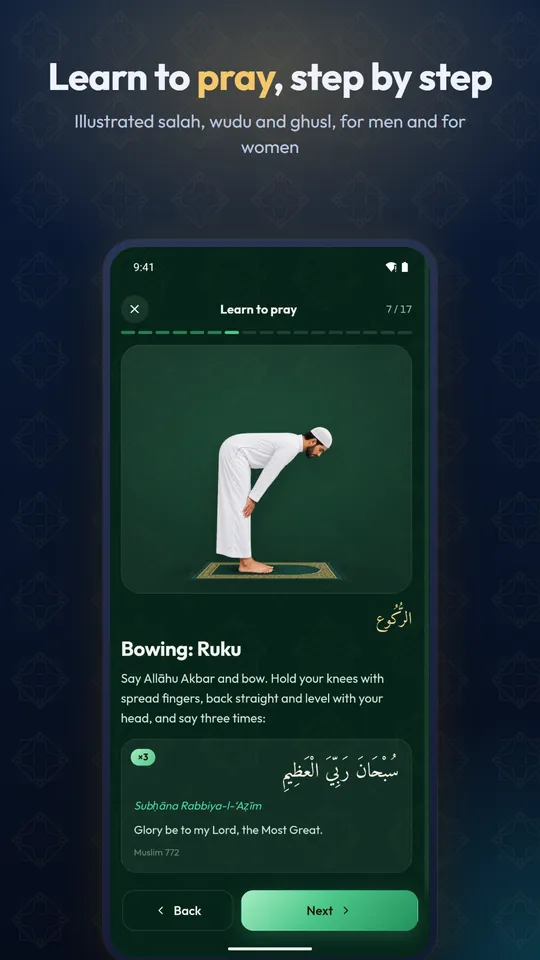
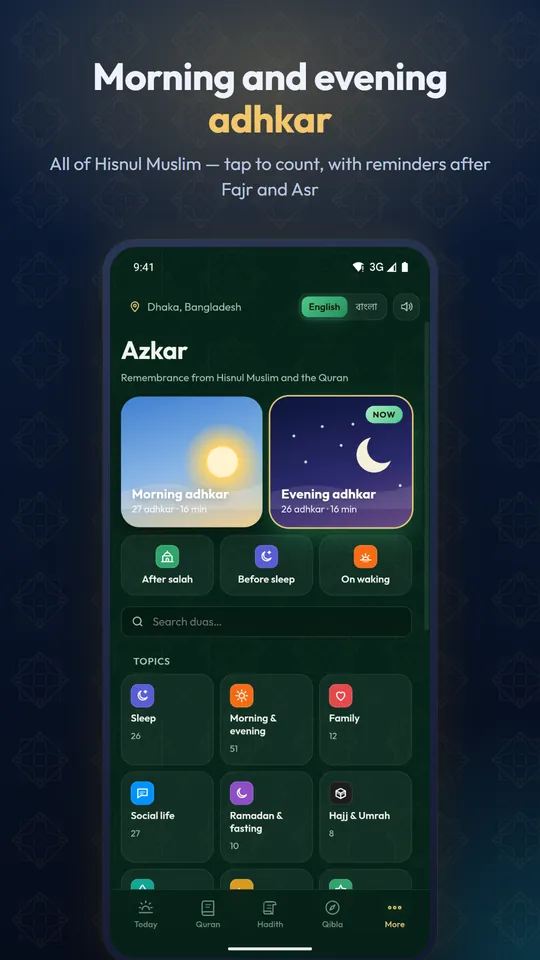
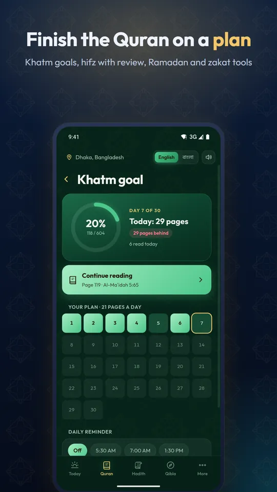
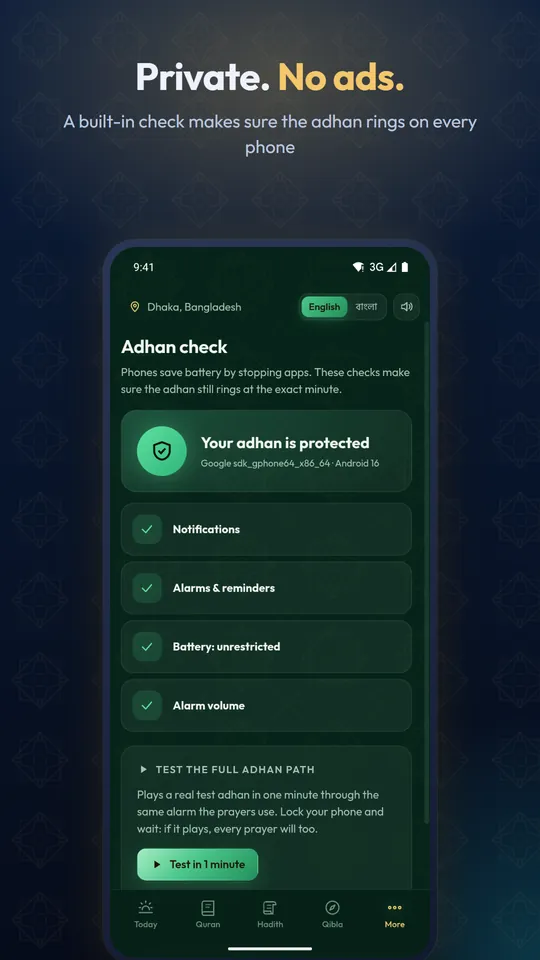

Prayer times with an azan that really rings on time
Accurate namaz times and a beautiful azan five times a day — plus the whole Quran with audio and Bengali meaning, 36,000 hadith, morning and evening azkar and an illustrated salah guide. No ads. No tracking. Works offline.

Everything for a practising Muslim
Prayer times, the Quran, Hadith and daily remembrance in one app — built for Bangladesh and made for Muslims everywhere.
Azan that never misses
Exact alarms, a built-in Adhan check for Xiaomi, Samsung, Vivo, Oppo, Realme and Tecno battery killers, and your mosque's jamaat times.
The whole Quran, offline
Uthmani or IndoPak with tajweed colours, Bengali and English translations, word-by-word meaning, tafsir and search.
Audiobook with meaning
12 reciters. Each word lights up as it is recited, then the meaning in Bengali or English — even with the screen off.
36,000 hadith
Bukhari, Muslim, Abu Dawud, Tirmidhi, Nasa'i, Ibn Majah and Malik in Arabic, English and Bengali, with grades.
Azkar & Hisnul Muslim
Guided morning and evening adhkar you count with a tap, all 421 duas of Hisnul Muslim, and reminders after Fajr and Asr.
Learn to pray
Illustrated step-by-step salah, wudu and ghusl, for men and for women, with every recitation and its meaning.
Khatm goals & hifz
Finish the Quran on a plan, and memorise with hidden words, the reciter on repeat and spaced review.
Ramadan, fasting & zakat
Sehri and iftar countdown, a fasting tracker, sunnah fasts, Bangladesh Hijri dates, and a zakat calculator in vori.
Qibla, tasbih & more
Live Qibla compass, tasbih with the volume keys, prayer tracker, ten themes and backup to Google Drive.
Screenshots







Frequently asked questions
Why doesn't the azan ring on my Xiaomi, Vivo, Oppo or Samsung phone?
Many phones stop apps in the background to save battery, which silences prayer alarms. Waqt's Adhan check finds every setting that can block the azan and opens the exact screen to fix it. Then play a real test azan with the phone locked.
Which calculation method does Waqt use in Bangladesh?
University of Islamic Sciences, Karachi (Fajr and Isha at 18°) with Hanafi Asr. Fifteen methods are available worldwide, and you can adjust each prayer by minutes to match your mosque.
Why is the Hijri date different from Saudi Arabia?
Bangladesh starts each Islamic month by local moon sighting, often a day after Saudi Arabia. Eid al-Fitr 2026 was on 21 March in Bangladesh and 20 March in Saudi Arabia. Waqt follows Bangladesh's announcements.
Does the Quran work without internet?
Yes. The Arabic text, all translations, word-by-word meanings and the Hisnul Muslim duas are inside the app. Recitation streams online, or you can download a surah to listen offline. Hadith books open online chapter by chapter, or save a whole book.
Is there a salah guide for women?
Yes. The Salah guide shows the method for men or for women, with modest illustrations and the Hanafi postures and instructions for each.
Does Waqt need the internet or collect my data?
No account and no ads. Prayer times, Qibla and the Hijri calendar are calculated on your phone and work offline. See the privacy policy.